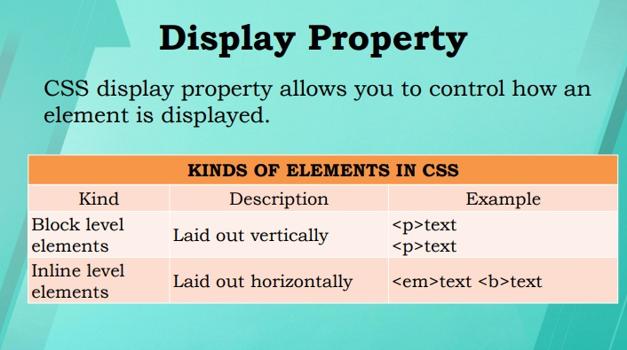
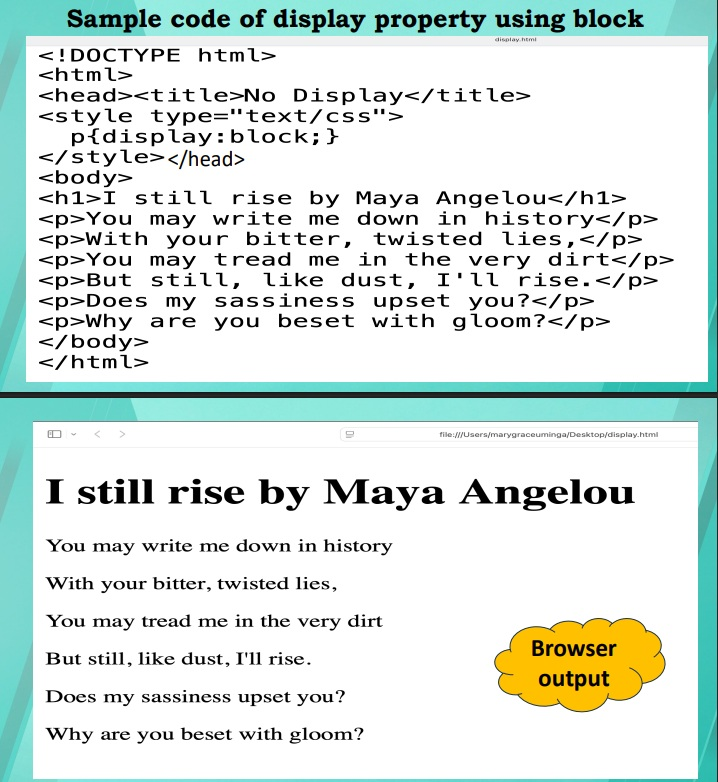
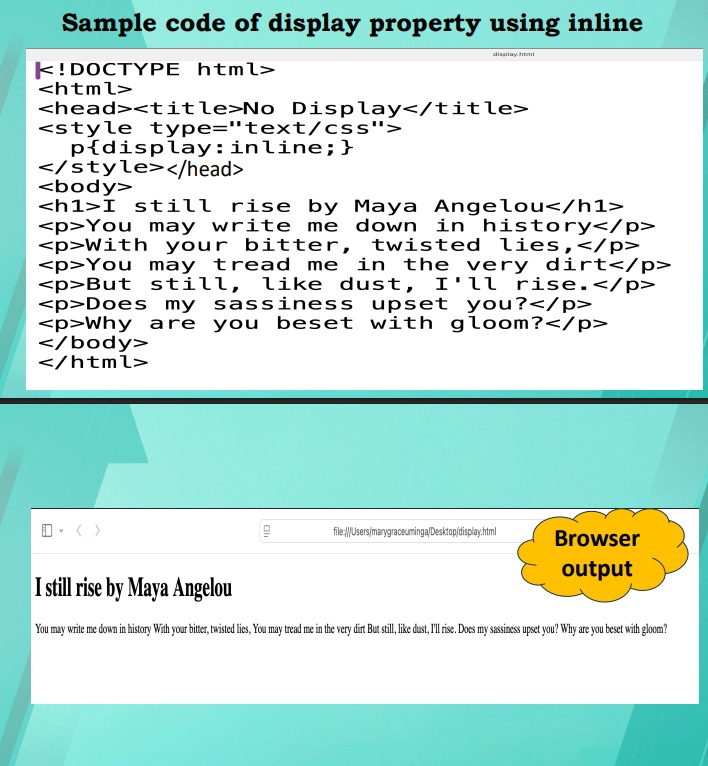
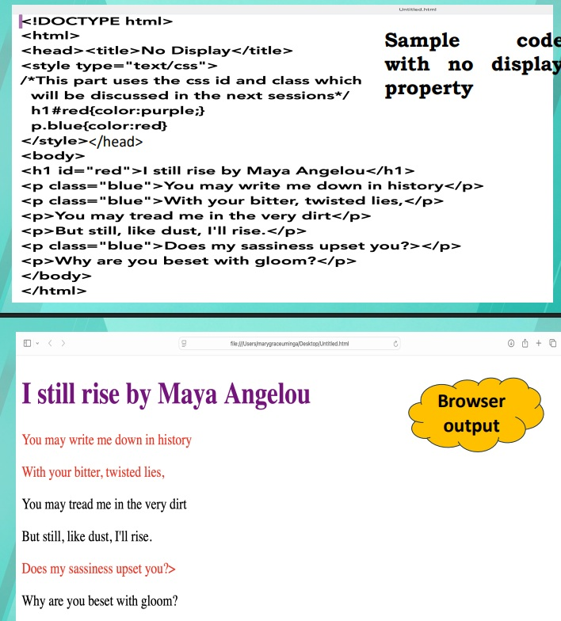
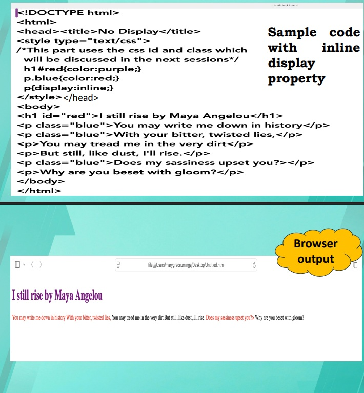
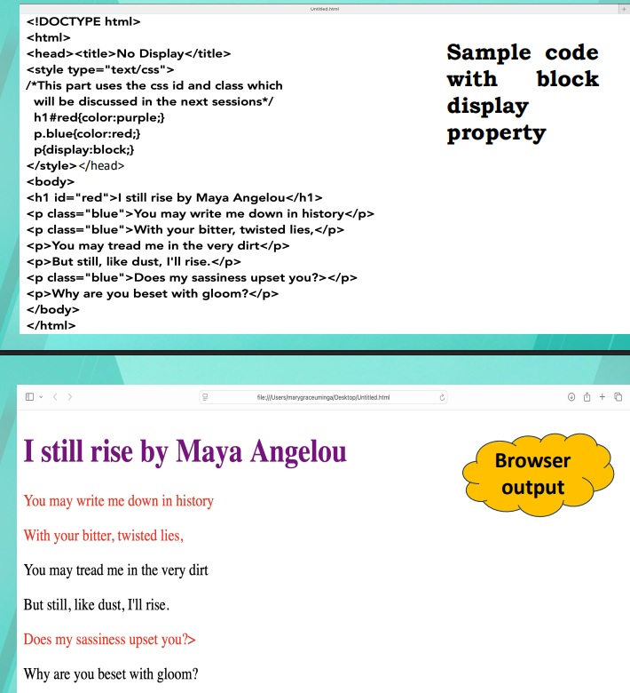

Lesson 3

Block Level Element
Block level elements take up as much space as possible by default. Each block level element will start a new line on the page, stacking down the page. In addition to stacking vertically, block level elements will also take up as much horizontal space as possible.
Examples of block level elements:
- <p>
- <ol>, <ul>, <dl>
- All headings
- <article>, <section>, <div>
Inline Level Element
Inline elements display in a line. They do not force the text after them to a new line. An anchor (or link) is an example of an inline element. You can put several links in a row, and they will display in a line.
Examples of inline elements:
- <a>
- <strong>, <em>, <b> <i>, <q>, <mark>
- <mark>
Why Is This Important?
How an element behaves when styled with CSS will change based on the display mode of an element (block vs. inline). Some CSS properties react differently for each display type. We'll learn more about this behavior when we start to lay out pages in CSS.
For now, remember this:
Inline elements cannot contain block level elements
 
 

Div Tag
- Div divides the contents of a web page into individual sections.
- Div tag allows you to apply styles to different sections of your webpage.
- It is a generic way of adding structure to an HTML document.
- Div tag is a block level element and is therefore, usually applied to block HTML and should not be used within a paragraph.
- In most web browsers, a div tag will provide line spacing before and after a block element.
Span Tag
- Span tag is a generic way of adding structure to an HTML document.
- Span is applied to an inline element.Span is applied to an inline element.
- It is used to emphasize words or sentences within a paragraph.
Span and Div Tags
- Span and Div tags do not have default styling information.
- Changing the style or formatting of the line or block covered by the tag, you need to specify an attribute to affect the desired style.
- Most HTML tags apply formatting just like tags for headings, lists and others, but there are some that do not have any specific effect, namely the container tags <span></span> and <div></div> but are actually used quite extensively in conjunction with CSS.
- Simply put, span and div tags are just used to format a part of the content by usually using CSS.
- The general difference between <span></span> and <div></div> is that <div></div> has line breaks before and after it.
- Usually the <span></span> is used for small chunks of code while <div></div> is for larger ones.
Reflection
In this lesson, I learned the difference between block-level and inline elements and how they affect webpage layout. I understood the importance of using div and span tags to organize and style content properly. This helped me see how structure and design work together to make webpages clear and visually appealing.
↑ Back to Top